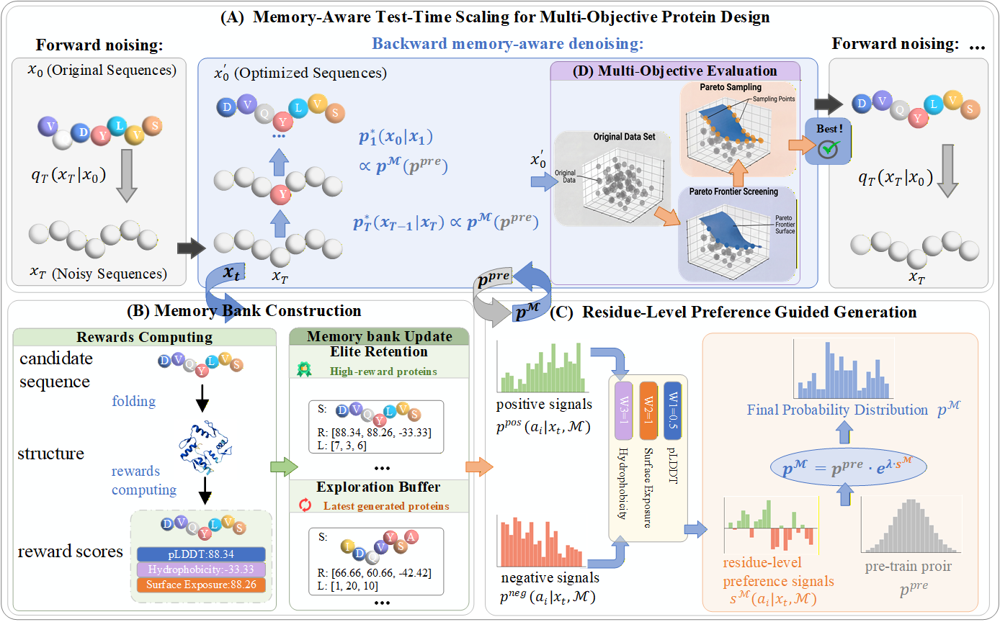
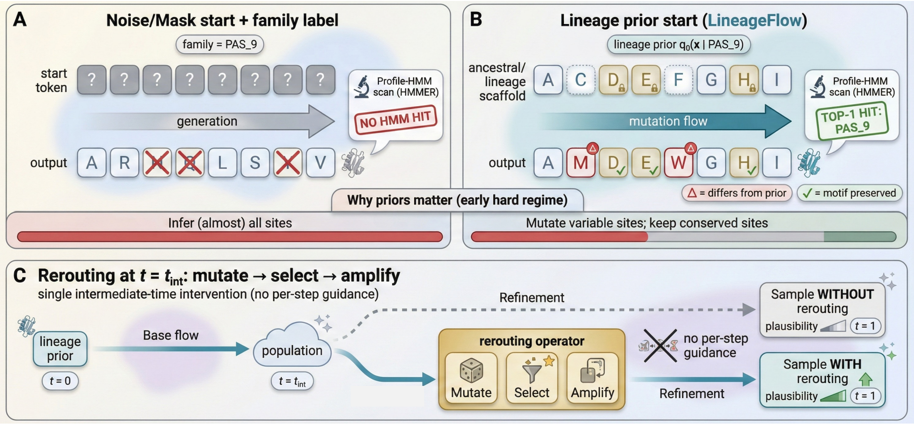
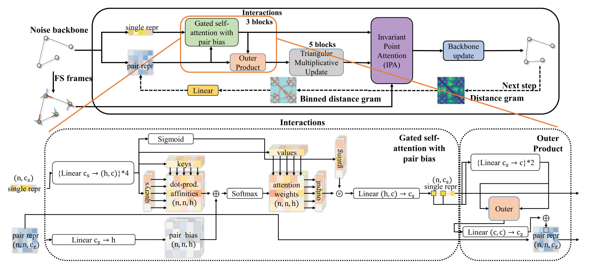

Ming Yang
Ph.D. Student @ Dalian University of Technology
I am a Ph.D. student at Dalian University of Technology (DUT), China, advised by Prof. Yanqing Guo.
I am a visiting student with the
Theta Team,
an AI for Biology team at Monash University supervised by Prof. Shirui Pan and
A/Prof. Vivek Naranbhai.
I am also in close and ongoing collaboration with Assistant Professor
Dr. Xin Zheng
from RMIT University.
My research focuses on: (1) AI for Biology; (2) Protein Design.
I work on machine-learning methods for computational protein design and related problems at the interface of AI and biomedicine, with papers accepted by ICML, KDD, and PAKDD.
Postdoctoral opportunities. As a Ph.D. candidate, I am seeking postdoctoral positions at the intersection of AI and biology, with a particular focus on protein design and drug discovery. I am open to discussing research fit and potential collaborations. Please feel free to email me at mingyanglucky@gmail.com for my full CV and research statement.

News
- [May 2026] My paper “Natural Language-powered Functional Protein Sequence and Structure Co-Design with Multi-modal Knowledge Fusion” was accepted by 32nd SIGKDD Conference on Knowledge Discovery and Data Mining - AI for Sciences Track (KDD 2026)! [May 2026] My paper “Multi-Objective Protein Design via Memory-Aware Test-Time Scaling in Diffusion Models” was accepted by Forty-third International Conference on Machine Learning (ICML 2026)!
- [May 2026] Our paper “LineageFlow: Flow Matching for High-Fidelity Family-Aware Protein Sequence Generation” was accepted by Forty-third International Conference on Machine Learning (ICML 2026)!
- [Sep 2025] Our team was awarded NVIDIA Academic Grant Program: “Natural Language-Driven Protein Sequence and Structure Co-Design”.
- [February 2025] Our paper “Efficient and Diverse De Novo Protein Backbone Design with SE (3)-Equivariant Diffusion” was accepted by Pacific-Asia Conference on Knowledge Discovery and Data Mining (PAKDD) 2025!
Selected Research
AI4Science; Protein Design;



Efficient and Diverse De Novo Protein Backbone Design with SE(3)-Equivariant Diffusion
Pacific-Asia Conference on Knowledge Discovery and Data Mining (PAKDD), 2025.